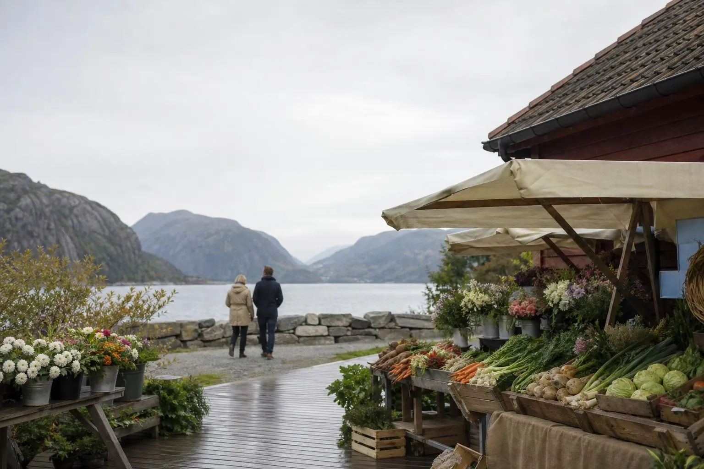

Give things a second home
Sell what you no longer use, and find what you need, from people nearby.
Browse itemsJust in
 AI
AI AI
AI AI
AISailing dinghy with trailer
€1,200.00
A small dinghy with mast, sail and tiller, on a road trailer. Ready for the summer.
Sports
 AI
AI AI
AI AI
AI